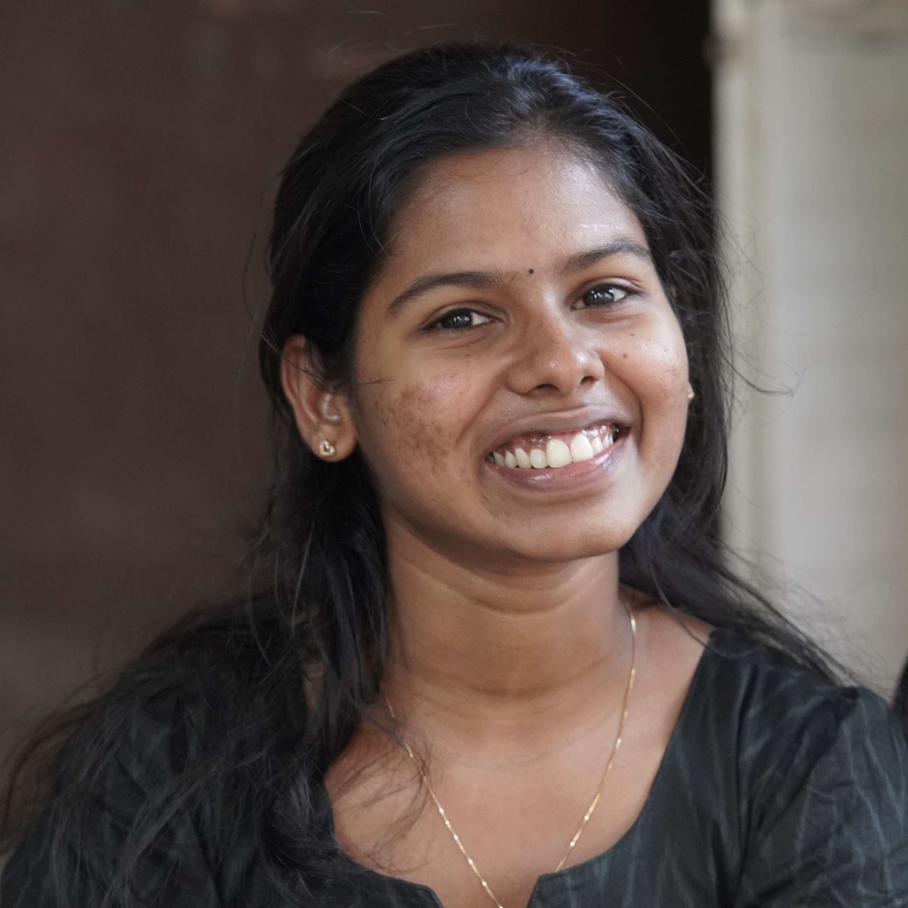
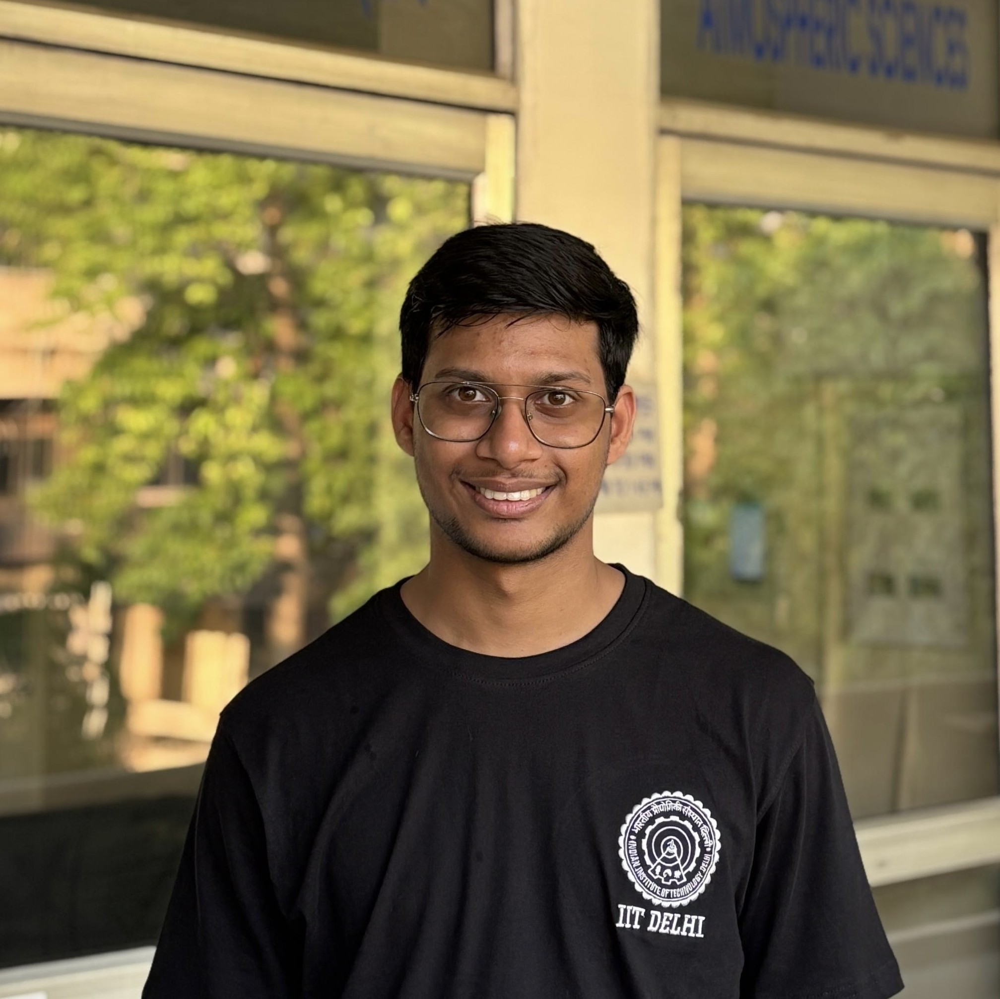
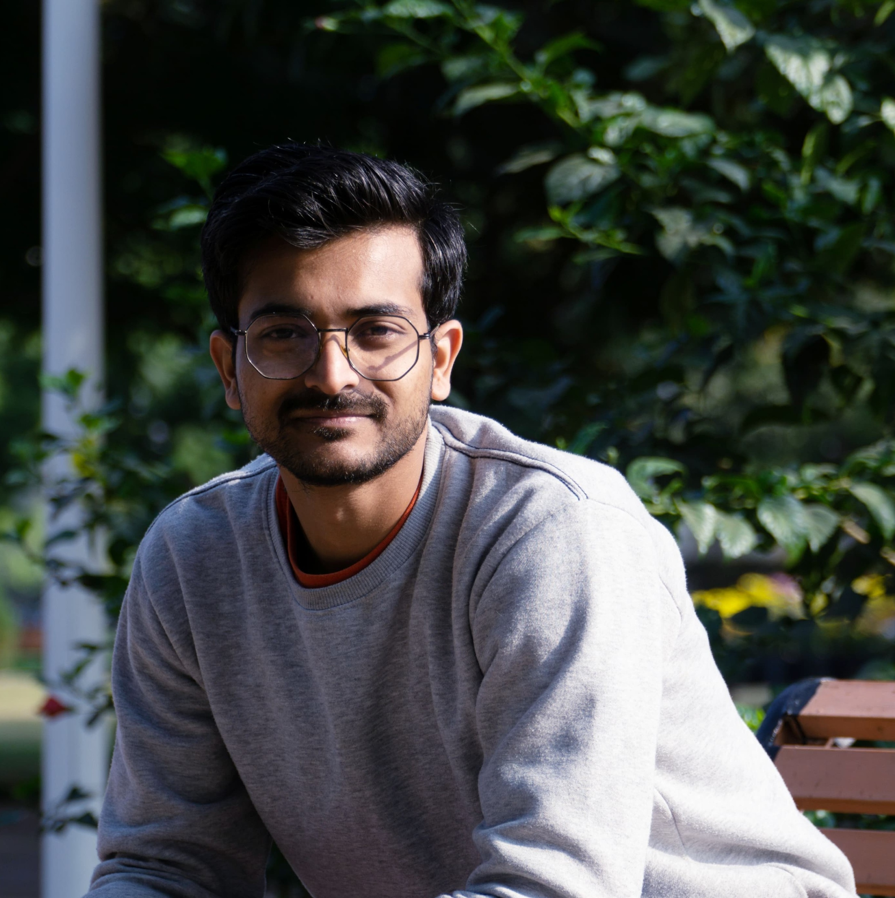
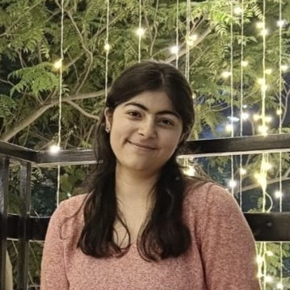
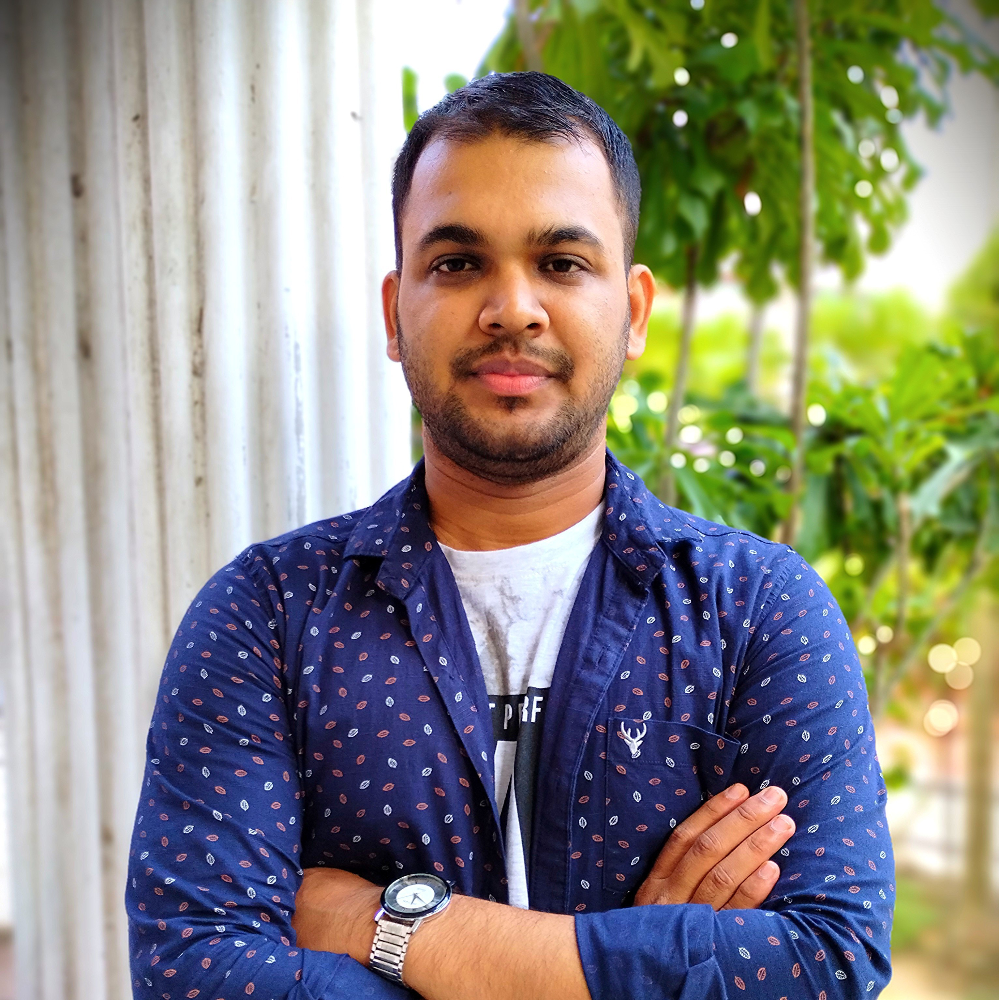
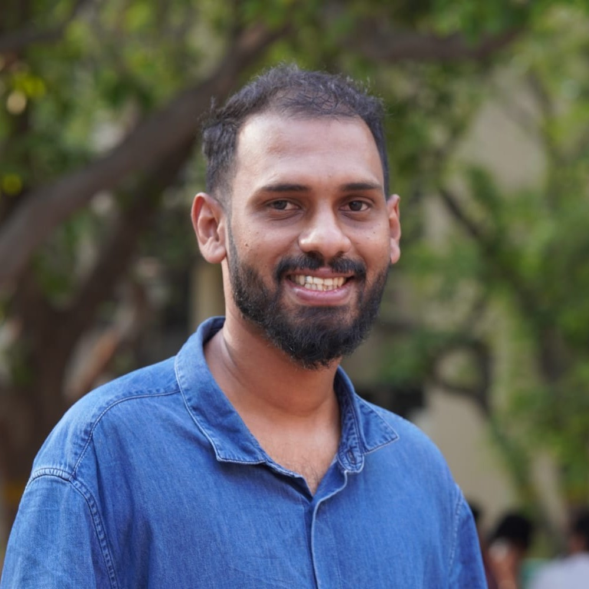
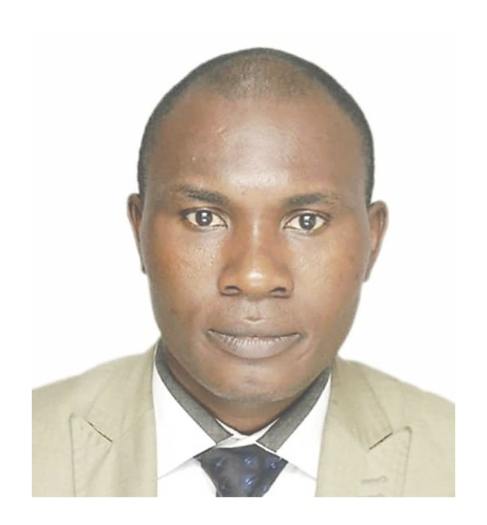
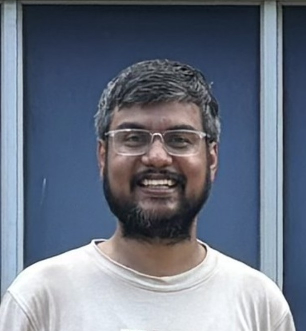
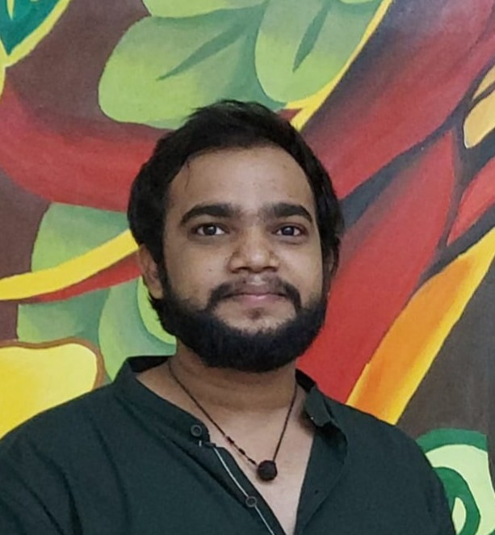
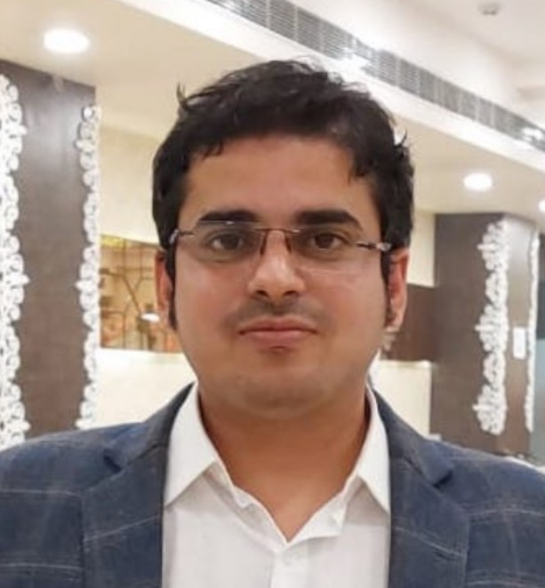

Prof. Sandeep Sukumaran
Associate Professor, CAS, IIT Delhi
Mittal Foundation Chair in Climate Sciences
Dr. Sandeep leads the Climate Dynamics Lab and specializes in Indian monsoon dynamics, climate modeling, and AI applications in atmospheric science. He is currently an Associate Professor at the Centre for Atmospheric Sciences, IIT Delhi, a position he has held since December 2022. He joined the Centre as an Assistant Professor in November 2017.
Ph.D. Scholars

Alice Jeeva PJ
Ph.D. Scholar
Investigating scale interaction processes to advance the understanding of Indian Summer Monsoon variability.

Pankaj Lal Sahu
Ph.D. Scholar
Blending climate dynamics and machine learning to better understand and predict tropical cyclones and extreme weather.

Charudatt Puri
Ph.D. Scholar
I study monsoon dynamics, specifically focusing on how monsoon Low-Pressure Systems originate using observational datasets and global climate models.
Anirudh K M
Ph.D. Scholar
Bridging machine learning and physics to improve sub-seasonal forecasting of the Indian Summer Monsoon by modeling its complex interactions with global climate variability.

Sanya Narbar
Ph.D. Scholar
Understanding the influence of aerosol on monsoon dynamics.

Gobinda Manna
Ph.D. Scholar
Improving Seasonal Forecasts of the Indian Summer Monsoon by Understanding ENSO–Monsoon Teleconnections.
Alumni

Saran Ranrajendran
Ph.D. Graduate
Defended: 6 May 2026
Interannual Variability of Indian Summer Monsoon.

Tomviezebe Cephas Dombo
Ph.D. Graduate
Defended: 27 Nov 2024
Joint supervision with Prof. Krishna AchutaRao

Rahul Singh
Ph.D. Graduate
Defended: 10 Jul 2024
Postdoc, University of Chicago
K S S S Sai Srujan
Ph.D. Graduate
Defended: 13 Mar 2024
Joint supervision with Prof. Hariprasad Kodamana

Varunesh Chandra
Ph.D. Graduate
Defended: 17 Oct 2023
Postdoc, University of Washington / PMEL